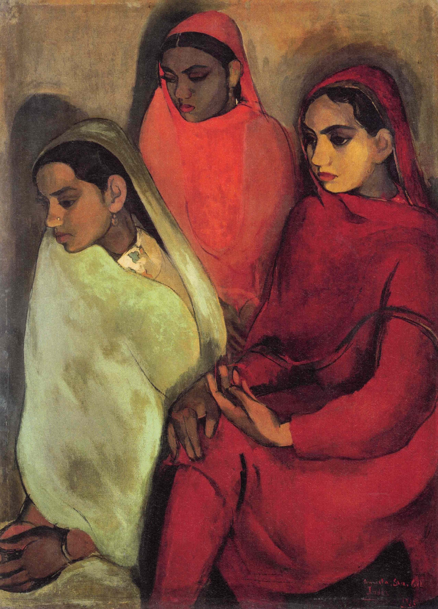

The central head rises highest; the sides descend. Cropped legs and setting compress the bodies into three sculptural masses. Their glances circulate inside the image and refuse the viewer.
Red and green are complements, but nothing feels festive. Greyed olive and a brown atmosphere lower the volume. Light makes faces, hands, and cloth turn slowly rather than staging drama.
Heads, hands, and shoulders retain solid volume. Garments expand into broad colour fields while spatial detail recedes. Contours alternate between incision and absorption; thin background meets denser cloth.
Fact: Amrita Sher-Gil (1913–1941) returned to India in 1934 after studying in Paris. The collection identifies this as her first painting after that return and records its Bombay Art Society gold medal; accession 982.
The line above is visual analysis by “Daily Art,” not a claim about the sitters' psychology.
Amrita Sher-Gil, Group of Three Girls (also titled The Three Women), 1935, oil on canvas pasted on board, National Gallery of Modern Art, New Delhi, accession 982. Image: Wikimedia Commons file page, Public Domain Mark; verify jurisdiction and use. Image rights remain with the original creator and applicable rights holders. Analysis: “Daily Art.”